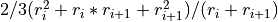
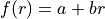
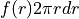
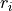
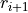
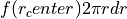
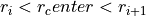
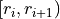
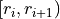

xopto.mcbase.mcutil.axis module¶
- class Axis(start: float = 0.0, stop: float = 1.0, n: int = 1, logscale: bool = False)[source]¶
Bases:
objectAn accumulator/detector axis with linearly or logarithmically spaced points/bins.
Creates a linearly or logarithmically spaced accumulator/detector axis. The parameters and data points of the axis can be accessed through several properties.
- Parameters
start (float) – Start coordinate (left edge) of the accumulator.
stop (float) – Stop coordinate (right edge) of the accumulator.
n (int) – Number of bins in the accumulator.
logscale (bool) – Scale of the accumulator. Linear if False (default) or logarithmic if True. Note that values of the start and stop parameters are threated as unscaled even if logscale is True.
Note
Note that only the r-axis of RT accumulators supports log-scale.
Detailed description of the class properties:
- start: float
Left edge of the first bin.
- scaled_start: float
Logarithm of the start point if bins are distributed logarithmically, else equals start.
- stop: float
Right edge of the final bin.
- scaled_stop: float
Logarithm of the stop point if bins are distributed logarithmically, else equals stop.
- span: tuple of two float
Full range of the accumulator axis as a tuple (start, stop).
- scaled_span: tuple of two float
Full scaled range of the accumulator axis as a tuple (scaled_start, scaled_stop).
- n: int
Number of bins along the axis.
- logscale: bool
True, if bins are distributed logarithmically.
- edges: np.ndarray vector
Numpy vector of bin edges (number of points is n + 1).
- centers: np.ndarray vector
Central positions of the bins.
- property centers: numpy.ndarray¶
Center points of the accumulators.
- property edges: numpy.ndarray¶
Edges of the accumulators.
- classmethod fromdict(data: dict) → xopto.mcbase.mcutil.axis.Axis[source]¶
Create a new object from dict. The dict keys must match the parameter names defined by the constructor.
- property logscale: bool¶
Accumulator scale.
- property n: int¶
Number of accumulators along the axis.
- property scaled_span: Tuple[float, float]¶
Scaled accumulator span as [min, max].
- property scaled_start: float¶
Scaled accumulator start coordinate.
- property scaled_stop: float¶
Scaled accumulator stop coordinate.
- property span¶
Accumulator span as [min, max].
- property start: float¶
Accumulator start coordinate.
- property step: float¶
Accumulator step.
- property stop: float¶
Accumulator stop coordinate.
- class RadialAxis(start: float = 0.0, stop: float = 1.0, n: int = 1, logscale: bool = False)[source]¶
Bases:
xopto.mcbase.mcutil.axis.AxisA radial accumulator/detector axis with linearly or logarithmically spaced points/bins and corrected accumulator centers.
Radial axis with corrected bin centers.
- The central point of each bin is computed as:

For a detailed description of parameters see the Axis documentation.
Note
Correction is based on the assumption that for linear functions of reflectance  the integral of  from  to  is equal to the integral of  from to , where . Computing the two integrals and equating the terms at coefficients
 and
and  yields the “equivalent” center point of the bin
.
Note that the two integrals represent surface integral of reflectace.
yields the “equivalent” center point of the bin
.
Note that the two integrals represent surface integral of reflectace.Warning
The spacing of points in the RadialAxis is uneven even if logscale is set to False, since correction of the bin centers depends on the absolute position of the bin. If using data from RadialAxis with the simpson integration method make sure to use a version that does not require a fixed step (specify x instead of dx in a call to scipy.integrate.simps). If using the
xopto.util.hankel.discrete_simpson()method make sure to set the value of the uneven parameter to True.- property centers: numpy.ndarray¶
Corrected centers of the accumulator bins.
- classmethod fromdict(data: dict) → xopto.mcbase.mcutil.axis.RadialAxis[source]¶
Create a new object from dict. The dict keys must match the parameter names defined by the constructor.
- class SymmetricAxis(center: float = 0.0, range: float = 1.0, n_half: int = 1000, logscale: bool = False)[source]¶
Bases:
objectAn accumulator/detector axis with linearly or logarithmically spaced points/bins placed symmetrically around a center.
Creates a linearly or logarithmically spaced symmetric accumulator axis. The parameters and data points of the axis can be accessed through several properties.
- Parameters
center (float) – Position of the axis/accumulator origin.
range (float) – Extent of the axis as [center - range, center + range].
n_half (int) – Number of bins in the interval [center, center + range]. The total number of bins equals 2*n_half.
logscale (bool) – Scale of the accumulator. Linear if False (default) or logarithmic if True. Note that the values of the center and range parameters are threated as unscaled even if logscale is set to True.
Note
Note that only some RT classes support the SymmetricAxis class.
Detailed description of the class properties:
- center: float
Coordinate of the center/origin of the symmetric accumulator.
- range: float
Range of the symmetric accumulator such that the full span of the symmetric accumulator is [center - range, center + range].
- start: float
Left edge of the first bin of the positive half interval. Note that for logarithmically spaced accumulators the start does not equal center but is instead slightly (eps) larger than the center.
- stop: float
Right edge of the final bin of the positive interval.
- offset: float
Offset of the left edge of the first bin along the positive interval. This value is 0 for linearly spaced accumulators but is a small nonzero value (eps) for logarithmically spaced values.
- scaled_offset: float
Logarithm of the offset of the left edge of the first bin along the positive interval. This value is 0 for linearly spaced accumulators but is a logarithm of a small nonzero value (ln(eps)) for logarithmically spaced accumulators.
- span: tuple of two float
Full range of the accumulators (start, stop).
- n_half:int
Number of bins along the positive axis [center, center + range].
- n: int
Number of bins (2*n_half) along the full axis range [center - range, center + range].
- logscale: bool
True, if bins are distributed logarithmically.
- edges: np.ndarray vector
Numpy vector of bin edges (number of points is n + 1) in the full axis interval [center - range, center + range].
- centers: np.ndarray vector
Central positions of the bins in the full axis interval [center - range, center + range].
- property center: numpy.ndarray¶
Axis/accumulator origin.
- property centers: numpy.ndarray¶
Central points of the accumulator bins.
- property edges: numpy.ndarray¶
Edges of the accumulator bins.
- classmethod from_dict(data: dict) → xopto.mcbase.mcutil.axis.SymmetricAxis[source]¶
Create a new object from dict. The dict keys must match the parameter names defined by the constructor.
- property logscale: bool¶
True if the accumulator is defined in log scale.
- property n: int¶
Total number of accumulator bins along the axis.
- property n_half: int¶
Total number of accumulator bins along the positive half axis.
- property range: float¶
Axis/accumulator range.
- property scaled_offset: float¶
Scaled offset of the first bin of the positive half interval from the center of the accumulator.
- property span: Tuple[float, float]¶
Accumulator positive half axis span as [min, max].
- property start: float¶
Accumulator positive half interval start coordinate.
- property step: float¶
Accumulator step/bin size.
- property stop: float¶
Accumulator positive half interval stop coordinate.